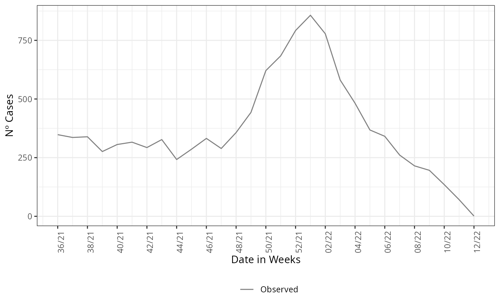
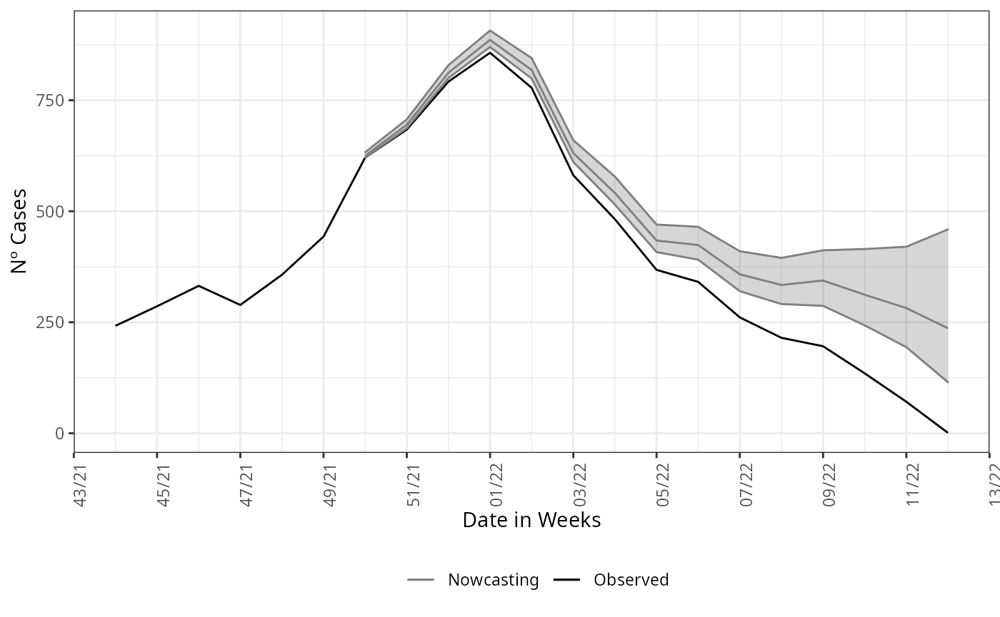

First example on LazyData
When the package is loaded it provides a LazyData file,
sariBH, it is a anonymized records of Severe Acute
Respiratory Illness notified in the city of Belo Horizonte, since March
2020 to April 2022. To load it basically write:
And we take a look on the data:
head(sragBH)
#> DT_SIN_PRI DT_DIGITA CLASSI_FIN EVOLUCAO CO_MUN_RES Idade fx_etaria
#> 1 2020-02-11 2020-03-05 4 1 310620 59 50 - 59
#> 2 2020-01-21 2020-02-06 4 1 310620 79 70 - 79
#> 3 2020-03-30 2020-04-17 4 1 310620 72 70 - 79
#> 4 2020-03-26 2020-04-02 4 1 310620 82 80 +
#> 5 2020-03-20 2020-04-13 4 1 310620 50 50 - 59
#> 6 2020-04-07 2020-04-22 5 1 310620 74 70 - 79It is a data.frame with 7 variables and 65,404 observations. We will make use of only the first two columns, “DT_SIN_PRI” (date of onset symptoms) and “DT_DIGITA” (recording date) as well the column “Idade” (age in years) to make age structured nowcasting.
The call of the function is straightforward, it simply needs a
dataset as input, here the LazyData loaded in the namespace
of the package. The function has 3 mandatory parameters,
dataset for the parsing of the dataset to be nowcasted,
date_onset for parsing the column name which is the date of
onset of symptoms and date_report which parses the column
name for the date of report of the cases. Here this columns are
“DT_SIN_PRI” and “DT_DIGITA”, respectively.
nowcasting_bh_no_age <- nowcasting_inla(dataset = sragBH,
date_onset = DT_SIN_PRI,
date_report = DT_DIGITA,
data.by.week = T)
head(nowcasting_bh_no_age$total)
#> # A tibble: 6 × 7
#> Time dt_event Median LI LS LIb LSb
#> <int> <date> <dbl> <dbl> <dbl> <dbl> <dbl>
#> 1 17 2021-12-13 625 621 633 623 627
#> 2 18 2021-12-20 695 687 706. 692 699
#> 3 19 2021-12-27 812 801 829 808 817
#> 4 20 2022-01-03 886 870 907 880 894
#> 5 21 2022-01-10 818 799 844 811 826
#> 6 22 2022-01-17 630 609 662 622 640This calling will return for the first element the nowcasting
estimate and its Confidence Interval (CI) for two different Credible
interval, LIb and LSb are the max and min CI,
respectively, with credibility of 50% and LI and
LS are the max and min CI, respectively, with credibility
of 95%.
On the second element it returns the data to be grouped and summarized to give the epidemic curve, we can take a look on this element.
library(ggplot2)
library(dplyr)
dados_by_week <- nowcasting_bh_no_age$data |>
dplyr::filter(date_onset >= (max(date_onset)-270))
dados_by_week |>
ggplot()+
geom_line(data = dados_by_week,
aes(date_onset,
y = observed,
col = 'Observed'))+
theme_bw()+
theme(legend.position = "bottom",
axis.text.x = element_text(angle = 90)) +
scale_color_manual(values = c('grey50', 'black'),
name = '')+
scale_x_date(date_breaks = '2 weeks',
date_labels = '%V/%y',
name = 'Date in Weeks')+
labs(x = '',
y = 'Nº Cases')
After this element is groped by and summarized by the onset of
symptoms date, here DT_SIN_PRI, it is the epidemiological
curve observed. To example how the estimate compares with the observed
curve, we plot the estimate and the epidemiological curve all
together.
nowcasting_bh_no_age$total |>
ggplot(aes(x = dt_event, y = Median,
col = 'Nowcasting')) +
geom_line(data = dados_by_week,
aes(date_onset,
y = observed,
col = 'Observed'))+
geom_ribbon(aes(ymin = LI, ymax = LS, col = NA),
alpha = 0.2,
show.legend = F)+
geom_line()+
theme_bw()+
theme(legend.position = "bottom",
axis.text.x = element_text(angle = 90)) +
scale_color_manual(values = c('grey50', 'black'),
name = '')+
scale_x_date(date_breaks = '2 weeks',
date_labels = '%V/%y',
name = 'Date in Weeks')+
labs(x = '',
y = 'Nº Cases')
This is an example were the estimate was done without considering any type of structure in data, which is the first assumption for the nowcasting.